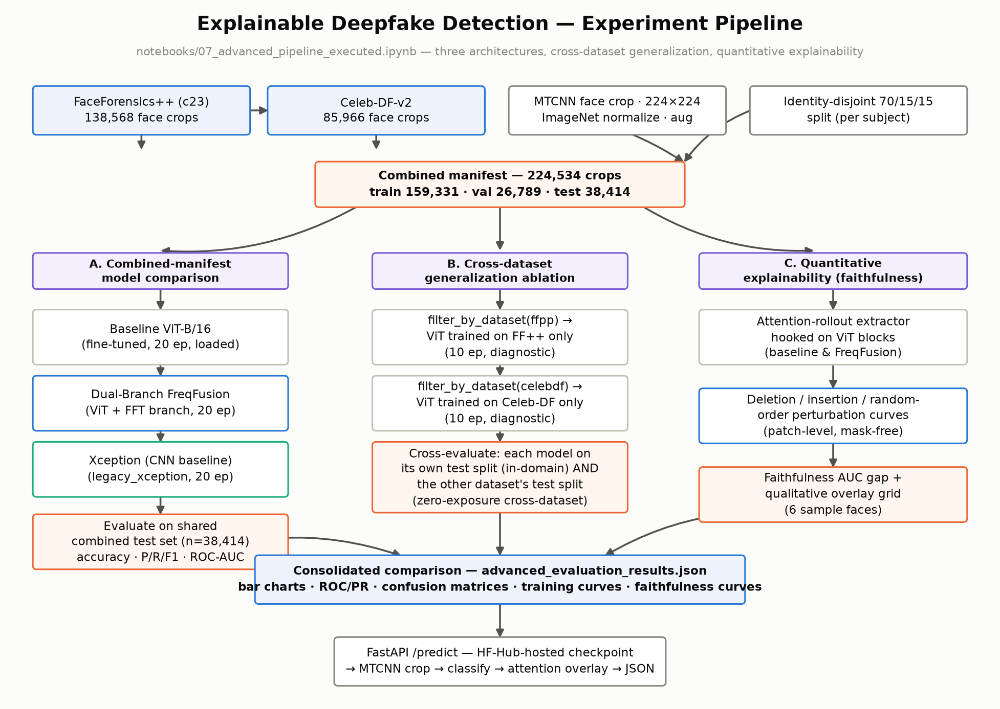

Explainable Deepfake Detection with Vision Transformers
A thesis project that builds a real/fake facial image classifier, explains each decision with attention rollout, and measures how well the detector holds up when the manipulation method changes.
The problem
Face manipulation tools have become cheap and convincing enough that synthetic images now appear in impersonation scams, fabricated evidence, and disinformation. Most published detectors are benchmarked on a single dataset and degrade sharply when the manipulation method, compression level, or source changes. They also return a bare score, which gives a reviewer nothing to verify.
This project addresses both gaps. It reports in-domain accuracy alongside a strict cross-dataset generalization test, and every prediction is accompanied by an attention map whose usefulness is measured with a quantitative faithfulness metric rather than assumed.
How it works
The deployed service runs the same pipeline as the research notebooks, end to end.
- 1. Upload and validation
The API accepts JPEG or PNG uploads only. Other content types are rejected before any processing.
- 2. Face detection and crop
MTCNN locates the largest face, crops it with a 20 px margin, and resizes it to 224 × 224. The same recipe produced every training crop, so the model never sees backgrounds or file-format shortcuts.
- 3. Normalization
The crop is converted to a tensor and normalized with ImageNet mean and standard deviation.
- 4. Classification
A fine-tuned ViT-B/16 produces two logits. Softmax gives the label and confidence. The dual-branch variant adds a frequency branch over the FFT spectrum before the classifier.
- 5. Attention rollout
Attention matrices from all 12 layers are combined to trace the class token back to the input patches. The heatmap is overlaid on the face crop and returned with the verdict.

Architecture
Three architectures were trained under an identical protocol so they can be compared directly.
ViT-B/16
ImageNet-21k pretrained transformer. 16 × 16 patches, 768-dim tokens, 12 layers, 12 heads, 85.8M parameters. Fine-tuned end to end.
Dual-branch spatial-frequency ViT
The ViT class embedding is concatenated with a 256-dim embedding from a small CNN over the log-magnitude FFT spectrum, then classified. 86.45M parameters.
Xception
The CNN used in the original FaceForensics++ benchmark. 20.8M parameters, trained with the same data, transforms, and epoch budget.
Datasets
| Dataset | Face crops | Real | Fake | Notes |
|---|---|---|---|---|
| FaceForensics++ (c23) | 138,568 | 19,196 | 119,372 | 6 manipulation methods |
| Celeb-DF-v2 | 85,966 | 12,404 | 73,562 | High-quality celebrity face swaps |
| Combined | 224,534 | 31,600 | 192,934 | ~86% fake, identity-disjoint split |
Frames are sampled at 1 FPS and faces cropped with MTCNN. The train, validation, and test split is assigned per identity, so the same person never appears in both training and test data. This prevents the model from memorizing who it is looking at instead of learning manipulation artifacts. Class imbalance is handled with a weighted sampler on the training split only.
Explainability
Attention rollout (Abnar and Zuidema, 2020) multiplies the attention matrices of successive layers, with residual connections folded in, to estimate how much each input patch contributed to the class token. Because the explanation is derived from the transformer's own weights, it needs no gradient computation and no auxiliary model.
The heatmaps are checked in two ways. Qualitatively, they concentrate on the eyes, nose, and mouth, which is where blending boundaries appear in face swaps. Quantitatively, deletion and insertion faithfulness curves (adapted from RISE, Petsiuk et al., 2018) measure whether removing the highlighted patches first changes the prediction faster than removing patches at random. That stricter test is reported as-is on the Research page.
Custom dataset fine-tuning
The original models were trained on video face swaps. A custom dataset introduces a different kind of fake: 210 real phone photographs paired with 210 fully AI-generated re-renders of the same people. Zero-shot, every original checkpoint scored at chance on it. After fine-tuning each checkpoint with replay of its original training domain, all five models reach 80 to 88% accuracy on the held-out custom split while losing at most 2.3 points on the original data.

Limitations
Technology
Modeling
- PyTorch and timm for the ViT-B/16 and Xception backbones
- facenet-pytorch MTCNN for face detection and cropping
- Training on Kaggle GPUs; custom fine-tuning locally on Apple M4 (MPS)
- Checkpoints hosted on the Hugging Face Hub for reproducible runs
Serving
- FastAPI inference service with a
/predictendpoint - Returns label, confidence, and a base64 PNG heatmap overlay
- Model weights loaded from the Hub at startup, CPU or CUDA
- This static frontend, served by the same app
See the numbers
Full metrics, cross-dataset tables, and faithfulness curves from the final report.